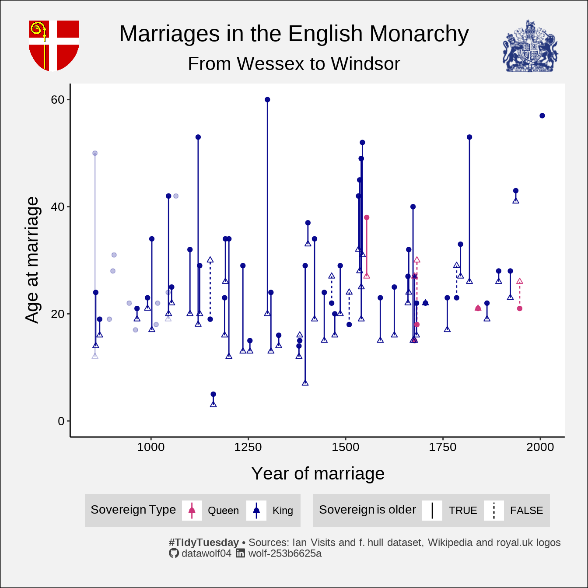
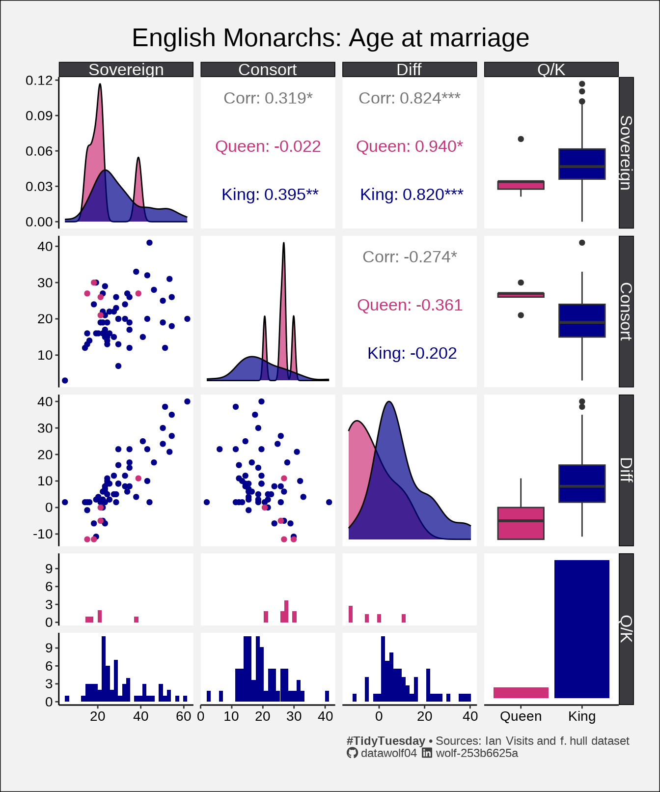

# A tibble: 6 × 5
king_name king_age consort_name consort_age year_of_marriage
<chr> <chr> <chr> <chr> <chr>
1 Victoria 21 Albert of Saxe-Coburg and … 21 1840
2 Edward VII 22 Alexandra of Denmark 19 1863
3 George V 28 Mary of Teck 26 1893
4 Edward VIII 43 Wallis Warfield Simpson 41 1937
5 George VI 28 Elizabeth Bowes-Lyon 23 1923
6 Elizabeth II 21 Philip of Greece and Denma… 26 1947 This week’s #TidyTuesday is all about exploring English Monarchs and Marriages!
this dataset focuses on the names, ages, and marriages of various ‘kings’ and ‘consorts’. the data ranges all the way back to 850 where the details are a bit fuzzy, spanning all the way to current day. names contain special characters; ages & years can be a bit of a regex puzzle as well. additionally, the age of kings and consorts may show quite a bit of an age gap.
The data was scraped from Ian Visits by f. hull, who also curated this week’s post!
Additions/changes to the dataset
I will note a few things which I can highlight by looking at the end of the dataset:
- King Charles III is not in this dataset. I will add him into the dataset. I’ll also include his consort as Camilla, rather than Diana, as Diana was not married to Charles during his reign.
- The dataset refers to the king rather than a gender neutral term. I will replace it with sovereign.
names(monarchDat) = str_replace_all(names(monarchDat),"king","sovereign")
charles = data.frame('Charles III','57','Camilla Parker Bowles','xx','2005')
names(charles) = names(monarchDat)
monarchDat = rbind(monarchDat,charles)I have retained the term consort as I don’t have a better one. I’m shuddering a bit though because we have a 5 and a 3 year old in this dataset:
# A tibble: 1 × 5
sovereign_name sovereign_age consort_name consort_age year_of_marriage
<chr> <chr> <chr> <chr> <chr>
1 Henry the Young King 5 Margaret of F… 3 1160 Finally, I also collected data of the different dynasties of English royalty taken from Wikipedia and Britannica. That data is the the file englishDynasties.csv.
Data cleaning
As one might expect from a dataset that has been scraped from a webpage written by a London history/culture type, there is some inconsistency in how the data has been cataloged. And as the prompt for the week says, some of the early data is “fuzzy”. So I want to clean it up. Here is a quick look at the data:
Rows: 84
Columns: 5
$ sovereign_name <chr> "Æthelwulf", "Æthelwulf", "Æthelbald", "Æthelberht", …
$ sovereign_age <chr> "?", "50(?)", "24", "–", "?", "19", "19", "28", "31",…
$ consort_name <chr> "Osburh", "Judith of Flanders", "Judith of Flanders",…
$ consort_age <chr> "?", "12", "14", "–", "?", "16", "?", "?", "?", "–", …
$ year_of_marriage <chr> "851(?)", "856", "858", "–", "?", "868", "893", "902"…As you can see above, uncertainty in the dataset is often indicated with ? or - being included in the string. Ultimately I want to work with numeric variables, for things like age and year, so I’m going to need to clean them up. I also want to track whether a date or age is uncertain, so I am going to create columns tracking that information. All of the queens in the dataset are named Mary, Elizabeth, Anne, or Victoria. Using str_detect and some OR logic, I believe that I have caught all of them.
Rows: 84
Columns: 14
$ sovereign_name <chr> "Æthelwulf", "Æthelwulf", "Æthelbald", "Æthelberh…
$ sovereign_age <dbl> NA, 50, 24, NA, NA, 19, 19, 28, 31, NA, NA, 22, N…
$ consort_name <chr> "Osburh", "Judith of Flanders", "Judith of Flande…
$ consort_age <dbl> NA, 12, 14, NA, NA, 16, NA, NA, NA, NA, NA, NA, N…
$ year_of_marriage <dbl> 851, 856, 858, NA, NA, 868, 893, 902, 905, NA, NA…
$ sovereign_age_unc <lgl> TRUE, TRUE, FALSE, FALSE, TRUE, FALSE, FALSE, FAL…
$ consort_age_unc <lgl> TRUE, FALSE, FALSE, FALSE, TRUE, FALSE, TRUE, TRU…
$ year_of_marriage_unc <lgl> TRUE, FALSE, FALSE, FALSE, TRUE, FALSE, FALSE, FA…
$ any_unc <lgl> TRUE, TRUE, FALSE, FALSE, TRUE, FALSE, TRUE, TRUE…
$ sovereign_type <fct> King, King, King, King, King, King, King, King, K…
$ age_diff_pos <lgl> NA, TRUE, TRUE, NA, NA, TRUE, NA, NA, NA, NA, NA,…
$ age_diff <dbl> NA, 38, 10, NA, NA, 3, NA, NA, NA, NA, NA, NA, NA…
$ min_age <dbl> NA, 12, 14, NA, NA, 16, NA, NA, NA, NA, NA, NA, N…
$ max_age <dbl> NA, 50, 24, NA, NA, 19, NA, NA, NA, NA, NA, NA, N…Plan
Make a plot with sovereign age and consort age vs. the year of marriage. On this plot I’m going to highlight:
- The age gap. If both sovereign and consort have the age recorded in the data, there will be a vertical line drawn from the younger to the elder.
- The gender of the sovereign. Kings are light blue and queens are pink.
- Marriages with uncertain data (either in the year or the ages of those involved) are more transparent so that they stand out less.

One more visualization
Pairs plots are fun, and the ggpairs function will automatically calculate some correlation values and put them on the plot as well. I’ve always done these using old school pairs and I thought it would be fun to look at one using the ggplot version. One big advantage is how it automatically uses the facet_grid framework to make the plots and include special plots along the diagonal. You could do the same thing with pairs, but it was more work.
A few notes about this plot:
- The density plots for the sovereign queens are “spikey” (for lack of a better term). There are just so few sovereign queens. Furthermore the age range at marriage is broad enough that this distribution is just not smooth. Until recently, the succession rules heavily favored male heirs. With the new rules recently adapted, maybe in another millenium or two, there will be enough sovereign queens that we can start approaching gender parity in this area.
- Also, even though the sovereign queens were the monarch, they also were (in general) younger than their consort, while the opposite is true for the kings.

The model that wasn’t quite there
- I like making different kinds of models. I’m wondering if we can build a model for sovereign age at marriage given inputs like gender and year. I didn’t do it here, in part, because I think that there is other work to be done. In particular, how long a sovereign has been in power would be useful data to gather, as well as figuring out how to deal with multiple marriages such as the case of Henry VIII.
# A tibble: 6 × 5
sovereign_name sovereign_age consort_name consort_age year_of_marriage
<chr> <chr> <chr> <chr> <chr>
1 Henry VIII 18 Catherine of Aragon 24 1509
2 Henry VIII 42 Anne Boleyn 32 1533
3 Henry VIII 45 Jane Seymour 28 1536
4 Henry VIII 49 Anne of Cleves 25 1540
5 Henry VIII 49 Catherine Howard 19 1540
6 Henry VIII 52 Catherine Parr 31 1543 Ew
I thought about ignoring this, but 2024 me simply cannot. I know it was a different time. I am simply upset that a society allowed this sort of predatory behavior under the guise of a self-proclaimed and self-serving monarch declaring his divine right as well as the nobility that enabled and enforced this behavior in service of the accumulation of power. So I’m creating a table and calling it my “Hall of Shame.” I’m not sure that age difference in a relationship is the single best way for building this group, but that’s the data that I have in front of me to use.
Hall of Shame |
|||||
|---|---|---|---|---|---|
| Perpetraitor | Victim | Δ | Year | ||
| Name | Age | Name | Age | ||
| Edward I | 60 | Margaret of France | 20 | 40 | 1299 |
| Æthelwulf | 50 | Judith of Flanders | 12 | 38 | 856 |
| Henry I | 53 | Adeliza of Louvain | 18 | 35 | 1121 |
| Henry VIII | 49 | Catherine Howard | 19 | 30 | 1540 |
| William IV | 53 | Adelaide of Saxe-Meiningen | 26 | 27 | 1818 |
| James II | 40 | Mary of Modena | 15 | 25 | 1673 |
#TidyTuesday • Sources: Ian Visits and f. hull dataset |
|||||